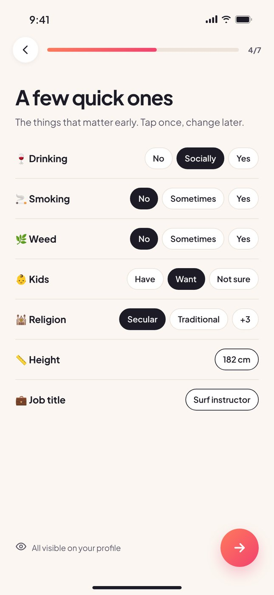
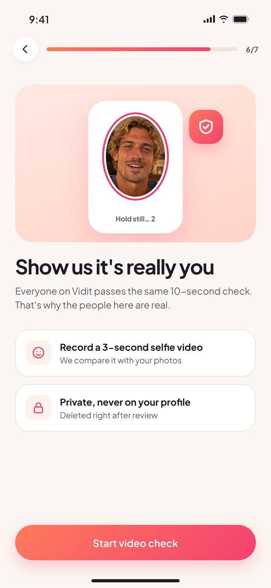
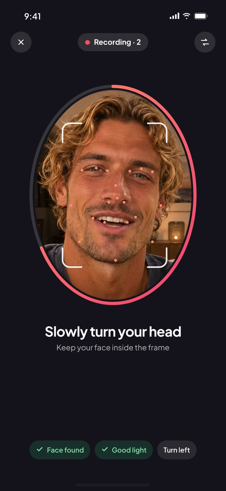
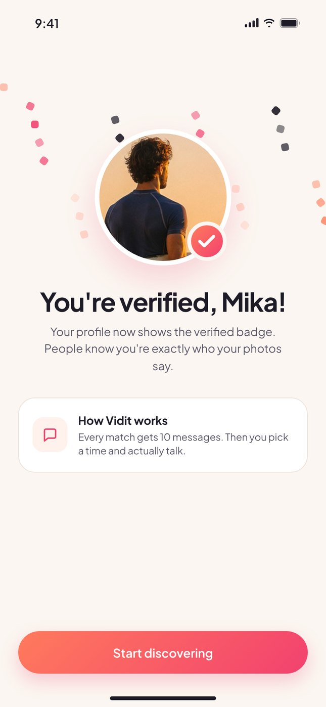
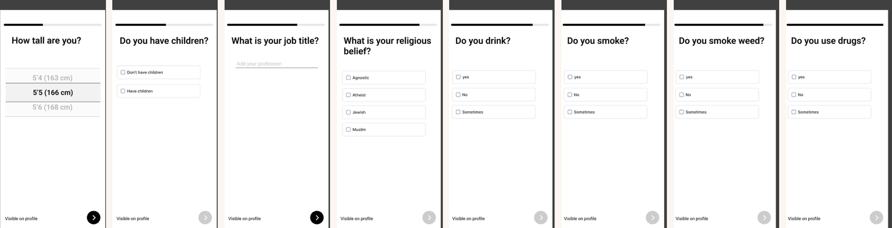
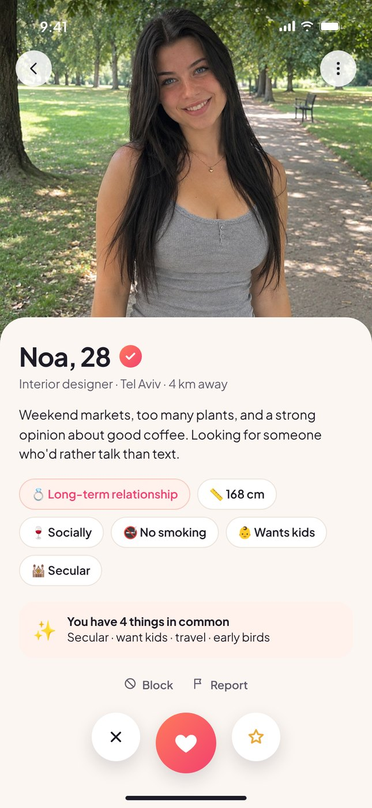
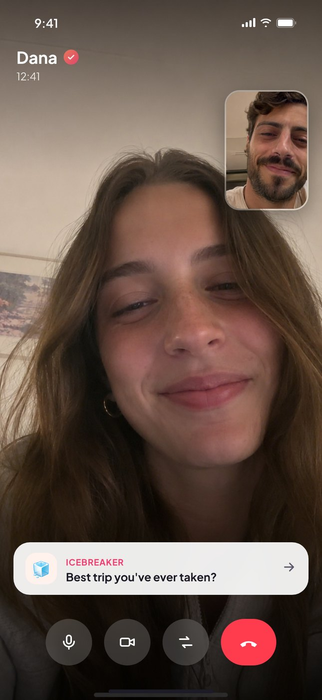
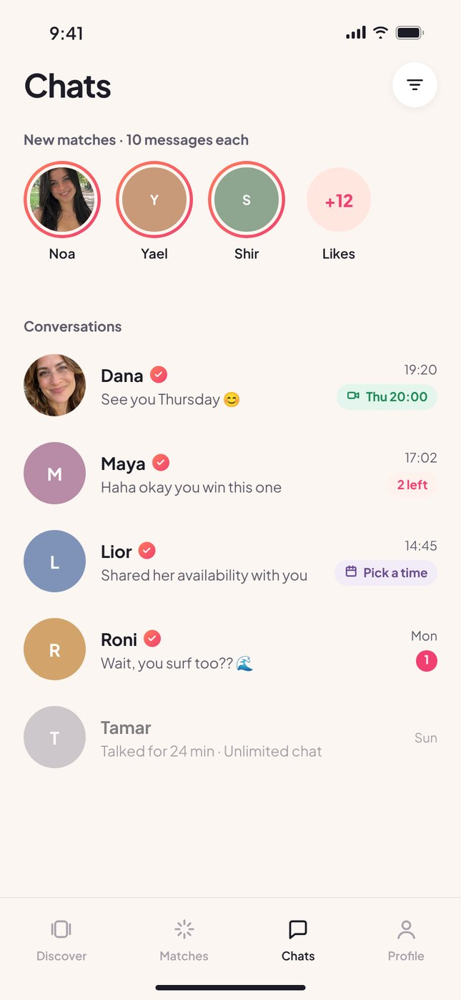

Matches that never become dates
Most dating apps are great at creating matches and bad at turning them into real connections.
I joined an early-stage startup as its only designer and built the product from zero: research and user interviews, product definition, user flows, and every screen. The startup didn't go to market in the end, but the concept was fully designed.
For this case study I revisited the original screens and pushed them further: a new visual identity, a shorter onboarding, and the screens the core idea was missing.
Three things that make dating apps exhausting
Endless texting
Chats drag on for days, lose energy, and fade out before anyone hears the other person's voice.
Who is this, really?
Old, filtered or fake photos make every match feel like a gamble, and some feel unsafe.
Ghosting
With no clear next step, conversations just stop and nobody knows why.
What if every match had to become a real conversation?
The rules behind the product
Real people only
A 3-second video check for everyone, so the verified badge actually means something.
10 messages, then talk
Enough to break the ice and get curious, not enough to get stuck in a pen-pal loop.
Respect everyone's time
Both sides share when they're free, and the app finds the overlap. No back and forth.
Safe by default
The number stays private, verification videos are deleted, and block or report is always one tap away.
From download to verified in 7 steps







Eight questions, one screen

From match to a real conversation
A face scan that takes 3 seconds
Before anyone can match, they record a short selfie video. It's compared with their photos and then deleted. The verified badge shows on every profile, card and chat.
- Live guidance: face found, good light, turn your head
- Private: the video never appears on the profile
- Explained in plain words before the camera opens
Profiles that say more than a photo
Big photos, a verified badge, and the basics as quick chips. The profile highlights what you have in common and shows whether the person is open to a call this week.
- "You have 4 things in common" to start the conversation
- Lifestyle answers shown as chips, not paragraphs
- Block and report always visible


Every message counts
The match screen explains the rule right away. In the chat, a counter shows how many messages are left, so both people know where the conversation is going.
- Two half-hearts come together on match, the same idea as the logo
- Visual counter: 3 of 10 left
- The chat list shows each conversation's status: messages left, waiting for a time, or call booked

No more "so when are you free?"
When the messages run out, each person picks a few free slots and chooses voice or video. Vidit shows the times that work for both, and the call is booked.
- Shared slots are highlighted: "Dana too"
- Add to calendar, or reschedule
- The chat stays locked until after the call, which keeps the focus on talking


Built-in calls, with a little help
The call happens inside the app, so nobody has to give out their number. If things go quiet, an icebreaker card suggests something to talk about.
- The incoming call reminds you it's the call you planned
- Icebreakers: "Best trip you've ever taken?"
- Voice or video, whatever feels comfortable


A clear next step, and a kind ending
After the call, each person answers privately: keep talking, meet in person, or not a match. If both say yes, the chat opens with no limits. If not, it closes kindly, so nobody gets ghosted.
- Answers are private until both respond
- "Let's meet" suggests a spot nearby
- Ends the ghosting problem by design


Warm, simple, made for two
Logo

The dot on each "i" is half a heart, one coral and one pink. In the wordmark they face each other. In the app icon and on the match screen they come together into a full heart.
Color
#FF7A5C
#F2416F
#FBF6F1
#1D1B26
Typography
A constraint can be the product
Limiting messages sounds like taking something away. In practice, it gives every conversation a direction and every match a reason to move forward.
Designing from zero meant defining the rules before the screens: what verification means, when a chat opens or closes, and how to end things kindly. Once the rules were clear, the interface could stay simple.
Concept project for an early-stage startup that didn't launch. Names and photos shown are illustrative.